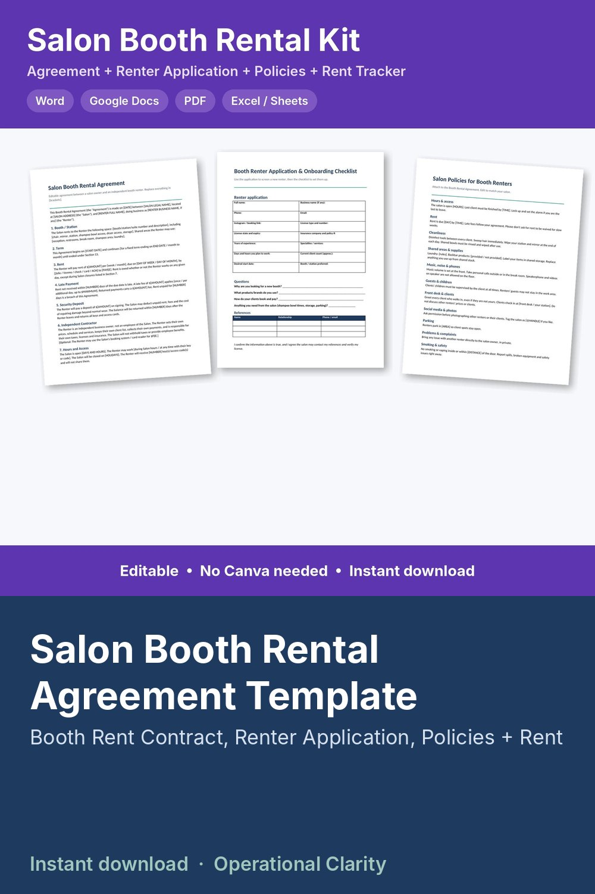

Salon Booth Rental Agreement Template

SALON BOOTH RENTAL KIT | Booth Rental Agreement + Renter Application + Salon Policies + Booth Rent Tracker | Editable Word, Google Docs, PDF & Excel | Instant Download
Everything a salon owner needs to bring on a booth renter, in one download. Not just a one-page contract: you also get a renter application, an onboarding checklist, a set of salon policies, and a spreadsheet that tracks rent, late fees, deposits and license renewals.
WHAT'S INCLUDED
1. Salon Booth Rental Agreement (Word + PDF)
• 15 sections: booth/station, term, rent, late payment, security deposit, independent contractor terms, hours and access, supplies and retail, licenses and insurance, sanitation, conduct, damage and liability, ending the agreement, client records, general terms
• Key-terms summary table and signature block
2. Booth Renter Application & Onboarding Checklist (Word + PDF)
• Application with license, insurance, experience and references
• Checklist for before move-in, move-in day and the first 30 days
3. Salon Policies for Booth Renters (Word + PDF)
• 11 ready-to-edit policies (hours, rent, cleanliness, shared supplies, music and phones, guests and children, front desk, social media, parking, complaints, safety) + renter acknowledgment
4. Booth Rent Tracker (Excel / Google Sheets)
• Weekly or monthly rent for up to 30 renters
• Rent due to date, payments, late fees and balance owed for each renter, calculated automatically
• Deposits held, monthly rent roll, rent collected this month
• License and insurance expiry dates flagged 30 days ahead
5. Start Here guide
EDIT IT YOUR WAY
Open the Word files in Microsoft Word, Pages or Google Docs and replace everything in [brackets]. No Canva account needed. PDFs are included for printing.
GOOD TO KNOW
• This is a template, not legal advice. Booth rental, independent contractor and deposit laws differ by state. Edit it to fit your salon and have it reviewed by a local attorney before use.
• Digital download. No physical item will be shipped.
• For use in your own salon. No reselling or sharing of the files.